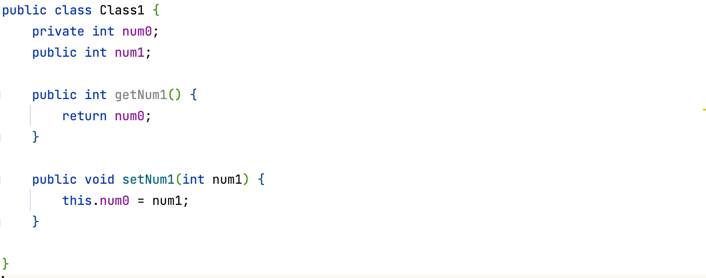

Incapsularea
Idea Incapsularii este - noi unim datele si metodele de lucru cu ele intr-un obiect. Incapsularea permite schimbarea codului fara a afecta alte parti ale programului. De exemplu, daca vrem sa schimbam numele unei variabile, nu trebuie sa cautam prin tot programul unde este folosita aceasta variabila. De si codul poate lucra si fara idea incapsularii. Nu este recomandat de anu nu o folosi, mai ales cand scrim in grup, deoarece fiecare poate sa faca modificari in codul celuilalt si se va primi un chaos.
Exemplu:
Avem o calsa cu 2 variabile, una privata si alta publica.
Accesul la aceste variabile il vom avea indiferent, daca variabila este publica sau privata.
Dar in cazul cand variabila are modificator privat si accesul la ea se face prin metoda. Noi putem face modificari asupra variabile(ex. schimbam numele), toate schimbarile se vor ace in\ interiorul clasei, iar in afara clasei nimic nu vom schimba.